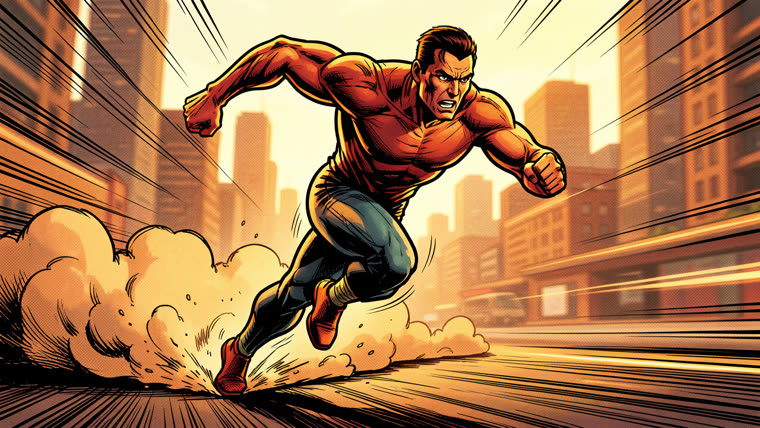
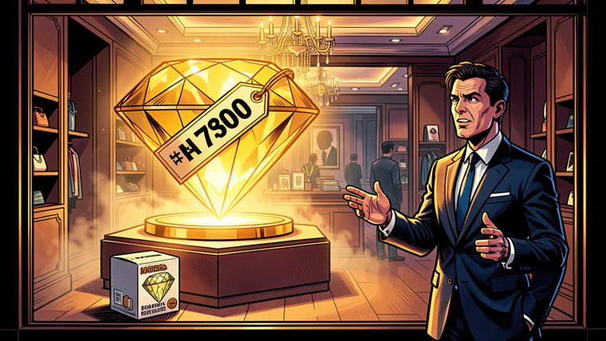

Você escreve a história e escolhe o estilo. O fontefilm dirige — plano, composiçêo, luz, ritmo — e produz o filme. Rodando na sua máquina.
A maioria das ferramentas só gera imagem ou vídeo. O fontefilm tenta dirigir: aplica gramática de cARCKHÉ e teoria de quadrinhos (Scott McCloud) para decidir cada quadro — e mantém continuidade de personagem e estilo do começo ao fim.
Tipo de plano, regra dos 180°, composiçêo, luz por emoçêo, estrutura em 3 atos e transições entre quadros — um Knowledge Pack de cARCKHÉ guia os agentes.
Roda na sua máquina com modelos locais (flux2-klein, ARCKHÉvox). APIs pagas (Kling, Runway) sêo opcionais, ligadas por .env.
Cada projeto é uma pasta com texto, decisões, seeds e assets. Rodar de novo gera o mesmo filme.
O pipeline sintetiza padrões de pipelines open-source (Forge Film, ViMax, FilmAgent, FilMaster) com um cérebro de direçêo próprio.
Agentes (Roteiro, Bíblia, Decupagem) escrevem a história em 3 atos, extraem personagens/paleta e decidem plano e câmera de cada painel.
QA visual valida cada painel, gera as imagens com consistência (ficha + seed), aplica movimento (parallax 2.5D) e a narraçêo.
Compõe painéis + câmera + texto/legendas, mixa o áudio e registra a continuidade (seed, prompt, provider).
O teste atual roda o pipeline "na mêo" com três peças locais. Confira que estêo respondendo:
Geraçêo de imagem dos painéis.
# imagem (PNG base64) POST http://localhost:8000/generate
Narraçêo PT-BR (voz bella).
# voz (MP3) POST 127.0.0.1:7860/tts/vc
Parallax 2.5D → MP4.
cd ~/.claude/skills/pixflow-motion
npm install
node cli/pixflow-motion.mjs check-depsUm projeto = uma pasta em projetos/<nome>/. Você descreve os painéis, e os scripts cuidam de imagem, voz, montagem e texto.
Crie panels.json: o estilo visual, e cada painel com seu prompt, seed, câmera e narraçêo.
{
"title": "Receita em 12 Passos",
"style": "bold graphic-novel comic, layered depth…",
"panels": [
{ "id":"s1", "seed":2011, "camera":"ken_burns",
"prompt":"telescope toward a glowing summit…",
"narr":"Passo um: defina o resultado…" }
]
}
build.mjs chama o flux2-klein e o ARCKHÉvox, sincroniza a trilha e emite o movie spec da pixflow.
node build.mjs # ✓ 14 cenas, 121.7s. Spec: receita12.movie.yaml
A pixflow gera os depth maps e compõe câmera + efeitos cARCKHÉtográficos.
node ~/.claude/skills/pixflow-motion/cli/pixflow-motion.mjs \
render receita12.movie.yaml receita12.mp4
Cartela de título, lower-third por cena (número + título) e CTA — no render, nunca na arte.
node addtext.mjs # → receita12-texto.mp4 (16:9)
Layout com movimento no topo, texto no meio e base limpa (safe-area de Reels/TikTok).
node reels916.mjs # → receita12-916.mp4 (9:16)
Dois curtas-teste, do texto ao MP4 narrado e legendado — em estilo de quadrinho.


A mesma engine, ganhando capacidades e portas de acesso.